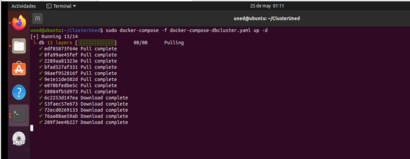

1. Objetivo del ejercicio
El objetivo de este ejercicio es desplegar un contenedor Docker denominado db_cluster, basado en MySQL, y realizar la carga automática de los datos generados previamente mediante el clúster Hadoop.
En este ejercicio se utilizará un archivo de datos en formato CSV, generado en etapas anteriores del proyecto, que será trasladado al directorio destinado a la carga de datos de la base de datos.
Una vez desplegado el contenedor, el estudiante podrá acceder al servidor MySQL, seleccionar la base de datos correspondiente y comprobar que las tablas y los datos se han cargado correctamente.
2. Arquitectura del despliegue
La siguiente figura muestra la arquitectura que será desplegada cuando sea necesario utilizar un contenedor MySQL para almacenar y explotar los datos compartidos en formato .csv.

El contenedor db_cluster proporciona el servicio MySQL necesario para almacenar los
datos generados
por el procesamiento realizado en el clúster Hadoop. Los archivos CSV se incorporan al directorio de
datos del
proyecto y son utilizados durante el proceso de inicialización de la imagen.
3. Preparación de los datos
Antes de levantar el contenedor db_cluster, es necesario trasladar los datos CSV
generados por el
clúster Hadoop al directorio utilizado por el contenedor para realizar la carga de información.
Los archivos CSV generados se encuentran inicialmente en el directorio compartido:
Estos archivos deben copiarse al siguiente directorio del proyecto:
Por ejemplo, desde el sistema anfitrión se puede realizar la copia de los archivos mediante el siguiente comando:
Una vez realizada la copia, es recomendable comprobar que los archivos se encuentran correctamente ubicados:
4. Compilación de la imagen Docker
Antes de levantar el contenedor db_cluster, es necesario compilar la imagen Docker
utilizada para
crear el contenedor y cargar los datos CSV.
Para ello, el estudiante debe situarse en el directorio que contiene el Dockerfile
correspondiente al contenedor db_cluster.
Durante este proceso Docker utilizará el Dockerfile existente en el directorio para
construir la
imagen db_cluster. Una vez finalizada la compilación, la imagen estará disponible
localmente para
utilizarla durante el despliegue del contenedor.
Cualquier cambio que el estudiante realice en el archivo init.sql o en los archivos
.csv utilizados durante la carga de datos requiere volver a realizar el proceso de
compilación
de la imagen Docker.
De esta forma, la imagen quedará actualizada y preparada para el posterior despliegue del contenedor.
5. Despliegue del contenedor db_cluster
Una vez compilada la imagen, ya es posible levantar el contenedor MySQL mediante el archivo
docker-compose-dbcluster.yaml.
Para ello, debemos situarnos en el directorio raíz del proyecto:
A continuación, se ejecuta Docker Compose en segundo plano mediante la opción -d:
El parámetro -d permite que el contenedor se ejecute en segundo plano, devolviendo el
control de la
terminal al estudiante.

Durante el proceso de despliegue puede observarse que Docker obtiene la imagen correspondiente desde
el
repositorio configurado para los estudiantes y posteriormente crea e inicia el contenedor
db_cluster.
6. Comprobación de los registros del contenedor
Una vez iniciado el contenedor, es recomendable comprobar los registros de ejecución para verificar que el proceso de inicialización de MySQL y la carga de los datos se han realizado correctamente.
Para consultar los registros del contenedor se ejecuta:
Esta instrucción permite visualizar los mensajes generados durante el proceso de inicialización. En
caso de
producirse algún error durante la creación de la base de datos, ejecución de init.sql o
carga de
los archivos CSV, estos mensajes pueden ayudar a identificar el problema.
7. Acceso al servidor MySQL
Una vez comprobado que el contenedor se encuentra correctamente desplegado, podemos acceder al servidor MySQL utilizando Docker Compose.
Para acceder al cliente MySQL dentro del contenedor se ejecuta:
El sistema solicitará la contraseña del usuario root.
8. Selección de la base de datos
Una vez dentro del cliente MySQL, es necesario seleccionar la base de datos que se desea utilizar.
En este ejercicio se utilizará la base de datos mydatabase.
Si la operación se realiza correctamente, MySQL mostrará un mensaje indicando que la base de datos ha sido seleccionada.
9. Comprobación de las tablas cargadas
Una vez seleccionada la base de datos, podemos comprobar las tablas existentes mediante la sentencia:
En el caso desarrollado en este proyecto, se ha cargado como prueba la tabla Corpus_Meddocan, cuyos datos proceden del archivo CSV generado y preparado durante las etapas anteriores.
Para comprobar la información almacenada en la tabla se puede ejecutar:
La utilización de LIMIT 10 permite consultar una pequeña muestra de los registros sin
necesidad de
mostrar todo el contenido de la tabla.
10. Experimentación propuesta
Una vez comprobado el correcto funcionamiento del contenedor, se propone al estudiante realizar diferentes modificaciones sobre la base de datos y observar el resultado obtenido.
Algunas de las modificaciones que pueden realizarse son:
- Cambiar el nombre de la tabla.
- Modificar los tipos de datos de las columnas.
- Añadir nuevas columnas.
- Eliminar columnas existentes.
- Crear nuevas tablas.
- Modificar el archivo
init.sql. - Incorporar nuevos archivos CSV.
- Realizar consultas SQL sobre los datos cargados.
- Comprobar el efecto de los cambios sobre el despliegue del contenedor.
Esta experimentación permite comprender la relación existente entre los archivos de configuración, la imagen Docker, el proceso de inicialización de MySQL y los datos utilizados por la aplicación.
11. Resumen del procedimiento
/media/notebook
al directorio
db_cluster/dataset.
Dockerfile de
db_cluster.
sudo docker build -t db_cluster ..
/home/uned/ClusterUned. docker-compose-dbcluster.yaml.
sudo docker logs db_cluster.
mydatabase. Corpus_Meddocan.
12. Resultado esperado
Al finalizar el ejercicio, el estudiante habrá desplegado correctamente un contenedor Docker con MySQL y habrá comprobado el proceso de carga de información procedente de archivos CSV.
De esta forma, se completa el flujo de trabajo entre el procesamiento distribuido realizado mediante Hadoop y el almacenamiento estructurado de los resultados en una base de datos MySQL.
El ejercicio permite además comprender cómo Docker facilita la creación de entornos reproducibles, en los que tanto la configuración de la base de datos como los datos iniciales pueden integrarse en una imagen preparada para su posterior despliegue.